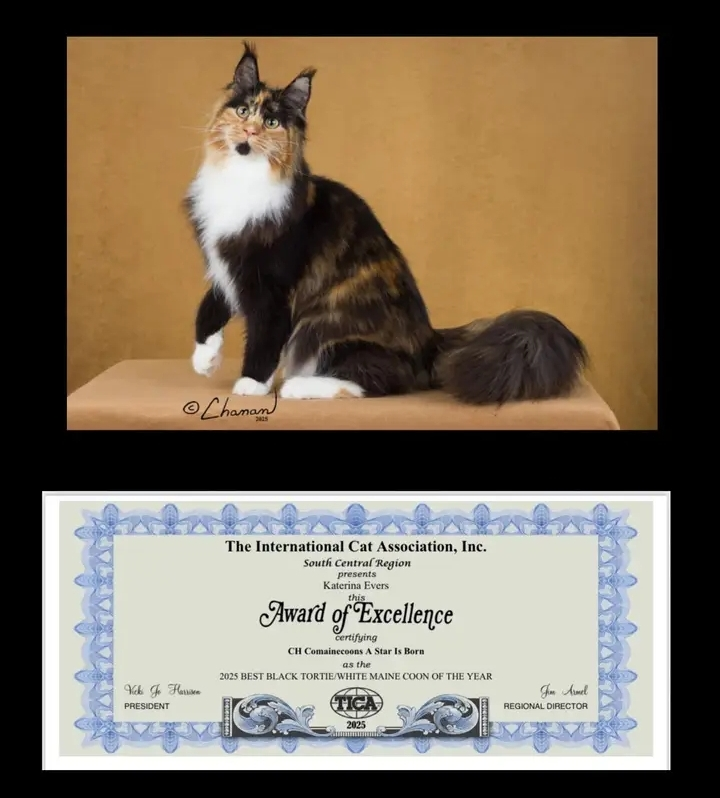
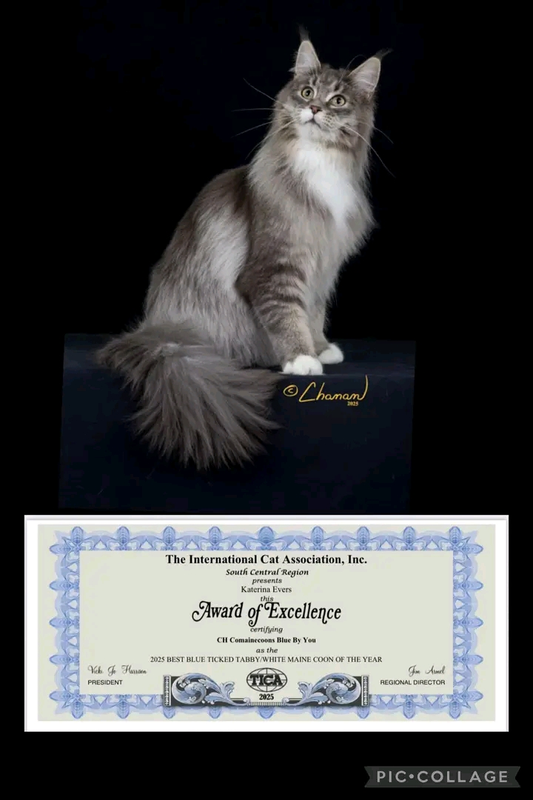
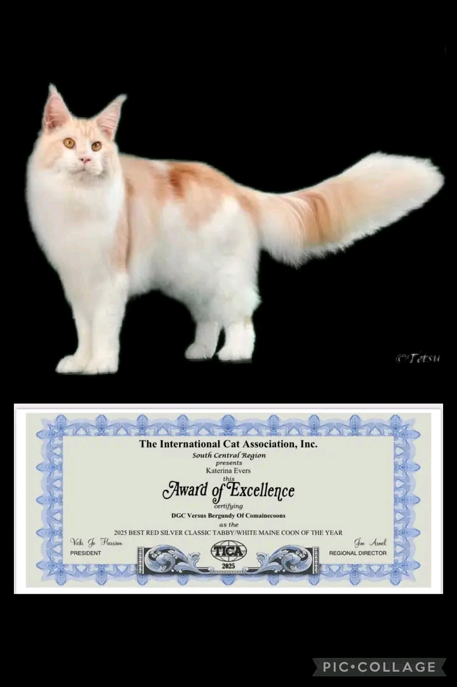
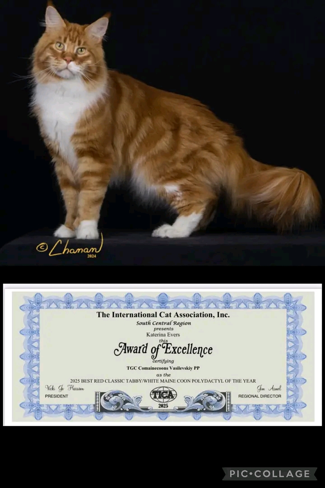
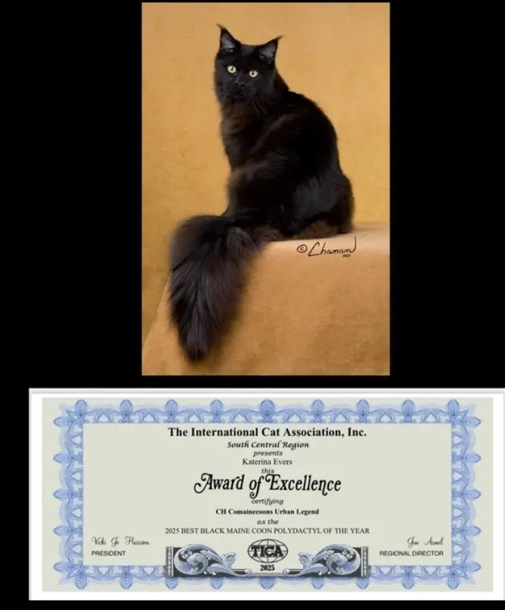

Best Kittens of the Year.






You can subscribe to our birth notifications to be informed (from our home page )
Find our Weddings in the "News" then Wedding sections or on our home page
Most of our Maine coon kittens are offered for Adoption
You will find our Kittens on the kittens for adoption page which will be regularly updated
Every year, we are blessed with the joy of new life, and our magnificent Maine Coon kittens are no exception. We are proud to offer lovingly raised, high-quality kittens to our adopters.
Our family nurtures these adorable bundles of joy, and while it's hard to part with them, we are excited to share their charm with loving families.
Not to mention that our Maine
Coon kittens are adorable. Our
kittens have charming and
affectionate personalities, which is
typical of the breed. They are also
raised in a healthy and secure
environment. We also ensure that
they are socialized from a young
age. In short, we are passionate
about our work. And we are
committed to providing healthy
Maine Coon kittens with fantastic
temperaments.
And this for the greatest pleasure of our family, but also for the greatest joy of their future adopters.
We are also available to offer advice and support to our adopters for any questions they may have about their Maine Coon kitten. We are committed to providing quality Maine Coon kittens to responsible adopters who want to be part of the Makatea Maine Coon family.
First of all, it's important to note that our selection criteria are personal; it's our choice. For example, we love wild looks with XXL ears, bodies, tails, and sizes. We also want to preserve the sweet, affectionate, clingy, and tender nature of the Maine Coon cat, this gentle giant.
Finally, don't forget to check out our marriages section to see the future wonders that should see the light of day in the Makatea Maine Coon Cattery. As well as our advice and feeding articles